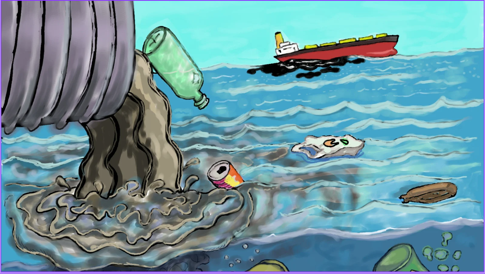

La existencia de los seres humanos y la vida en la Tierra es la encargada de mantener y contar con los oceanos, mares y especies marinas en sanidad.
¿Que esta pasando con la vida Submarina?
El mal estado del agua y el clima esta afectando a muchos animales, especies marinas, e incluso a los seres humanos que necesitan agua limpia.La situacion de los mares es grave, debido principalmente a la sobrepesca y al cambio climático. La contaminación química afecta negativamente tanto al medio marino como al agua dulce.
El océano esta en estado de gravedad ya que a ido aumentando la eutrofización, de la acidificación, del calentamiento de los océanos, y la contaminacion de plasticos afeca nuestra salud.
¿Que podemos hacer?
El uso moderado de plasticos desechables, reducir el vertido de aguas negras, dejar de usar liquidos toxicos al meterse al mar para no dañar la vida marina.Podria salvar nuestros mares de la contaminación, sin embargo la contaminación marina esta poniendo en riesgo un elemento escencial para la vida (que es EL AGUA), ya que tanto los humanos como las especies marinas la necesitan.

Según la ONU el aumento de plastico desechable a aumentado, este representa el 85% de residuos que llegan al mar. Este fenomeno podria aumentar mas de lo esperado ya que para el 2040 el volumen de este material se podria triplicar, llegando a los 23,37 millones de toneladas de residuos.